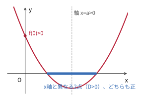

ホーム ＞ 数学I ＞ 2次方程式
2次方程式 \(x^2-2ax+a+2=0\) が異なる2つの正の解をもつような定数 \(a\) の値の範囲を求めよ。
2解を \(\alpha,\beta\) とする。異なる2つの正の解 ⇔ 次の3つがすべて成り立つ。
（和も積も正 ⇒ 2つとも正）。
よって \(a<-1\) または \(a>2\)。
数直線で重ねると（図）、3つすべてをみたすのは \(a>2\)。

\(a=3\)：方程式 \(x^2-6x+5=0\)、解 \(x=1,\ 5\)（ともに正）。
【答案（テストに書く形）】
答